神経科学 (Neuroscience)
30 templates available

脳波（正常）
正常脳波テンプレート。アルファ波（8-13Hz）の正常パターンをプロット。

脳波（てんかん）
てんかん脳波テンプレート。棘波/棘徐波複合のパターンをプロット。

脳波（睡眠段階）
睡眠段階の脳波テンプレート。N1-N3/REMのサイクルをプロット。

神経伝導検査
神経伝導検査テンプレート。伝導速度の測定に使用。

筋電図（正常）
正常筋電図テンプレート。MUAPの正常パターンをプロット。

筋電図（筋原性）
筋原性筋電図テンプレート。低振幅・短持続のMUAPをプロット。

筋電図（神経原性）
神経原性筋電図テンプレート。高振幅・長持続のMUAPをプロット。

視覚誘発電位
VEPテンプレート。P100潜時の測定に使用。視神経疾患の評価。

聴性脳幹反応
ABRテンプレート。I-V波の潜時測定に使用。聴神経腫瘍の評価。
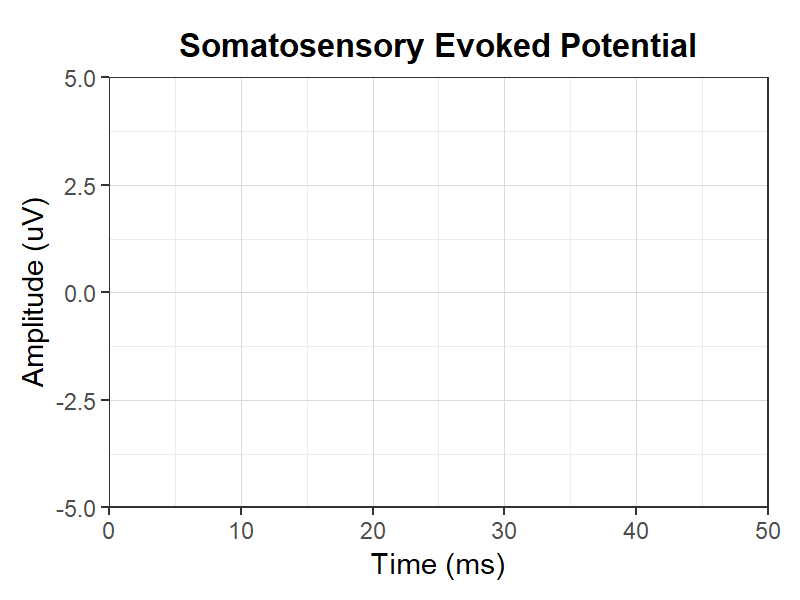
体性感覚誘発電位
SSEPテンプレート。N20/P37等の潜時測定に使用。
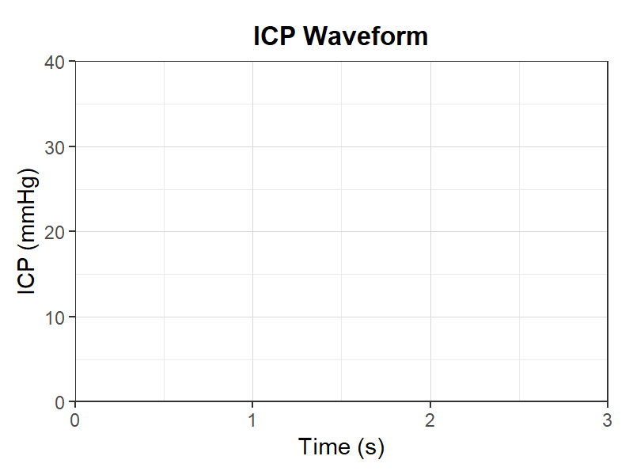
頭蓋内圧波形
頭蓋内圧波形テンプレート。P1/P2/P3波の形態を評価。
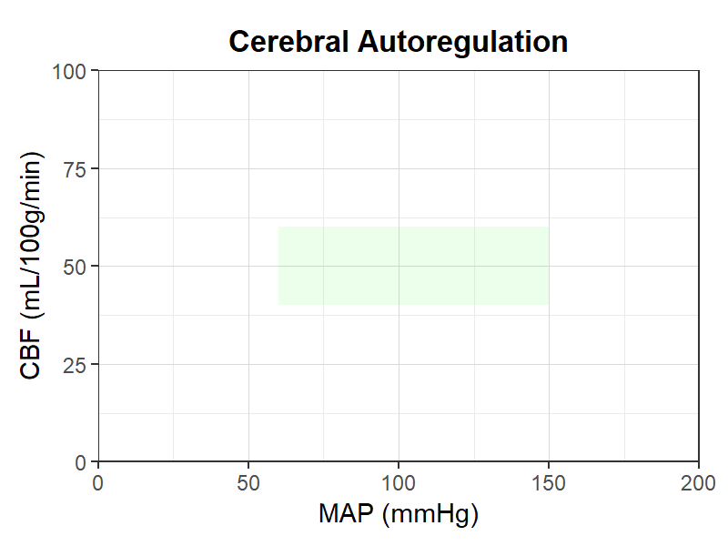
脳血流自動調節
脳血流自動調節テンプレート。MAPとCBFの関係をプロット。
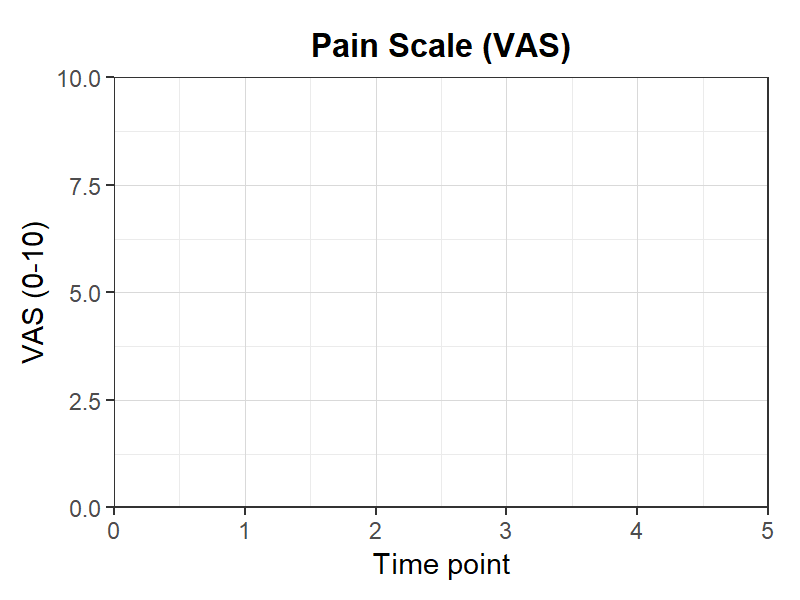
疼痛スケール（VAS）
VAS疼痛スケールテンプレート。疼痛強度の経時変化をプロット。
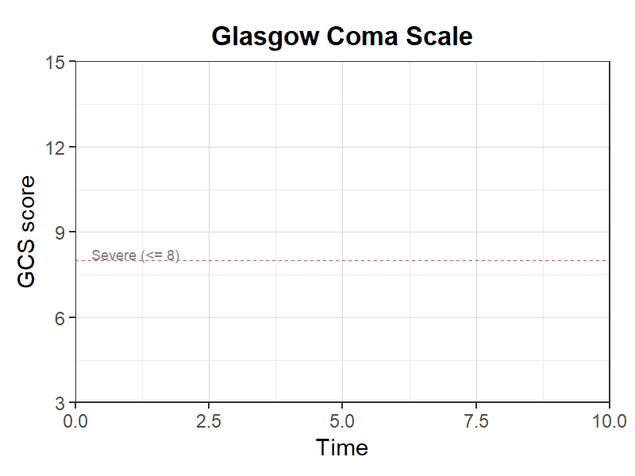
グラスゴー・コーマ・スケール
GCSテンプレート。意識レベルの経時変化をプロット。
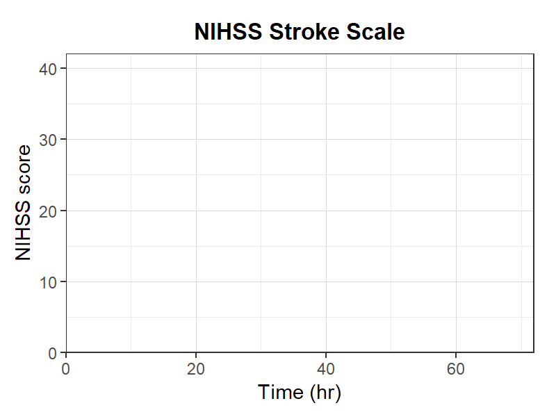
NIHSSスケール
NIHSSテンプレート。脳卒中の重症度と回復をプロット。
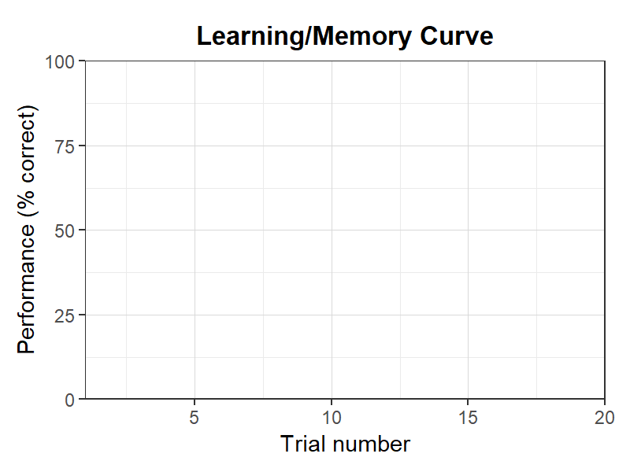
学習・記憶曲線
学習・記憶曲線テンプレート。試行回数と成績の関係をプロット。
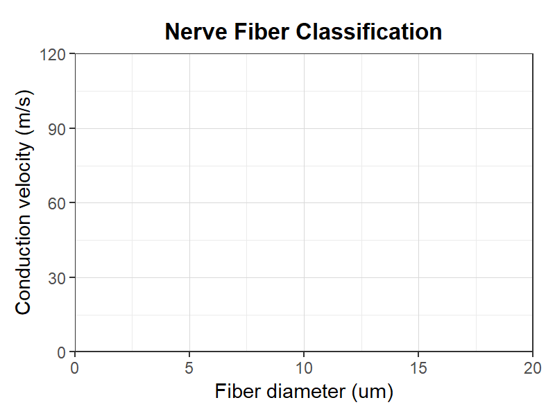
神経線維分類
神経線維分類テンプレート。線維径と伝導速度の関係をプロット。
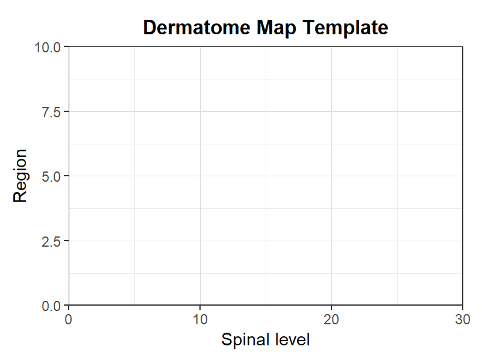
デルマトームテンプレート
デルマトーム（皮膚分節）テンプレート。脊髄レベルと支配領域の対応をプロット。
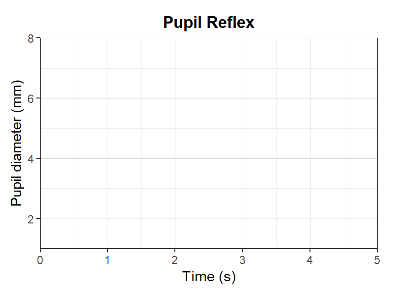
瞳孔反射
瞳孔反射テンプレート。対光反射の潜時と反応をプロット。
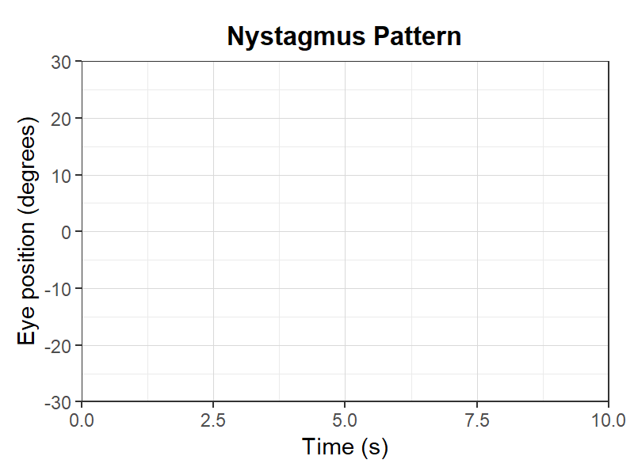
眼振パターン
眼振パターンテンプレート。急速相と緩徐相の方向と振幅をプロット。
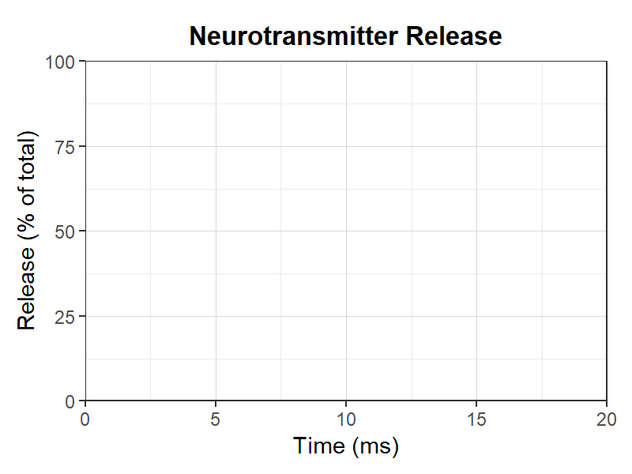
神経伝達物質放出
神経伝達物質放出テンプレート。刺激後の放出と再取り込みの時間経過をプロット。
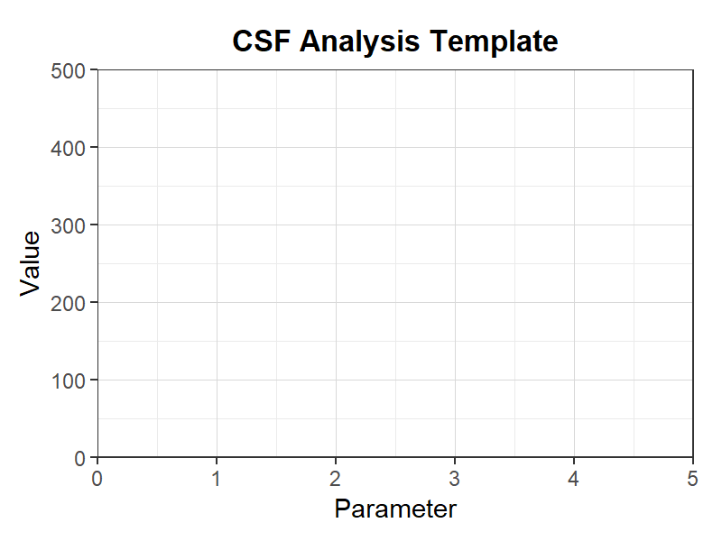
髄液検査テンプレート
髄液検査テンプレート。細胞数/蛋白/糖等の検査値をプロット。
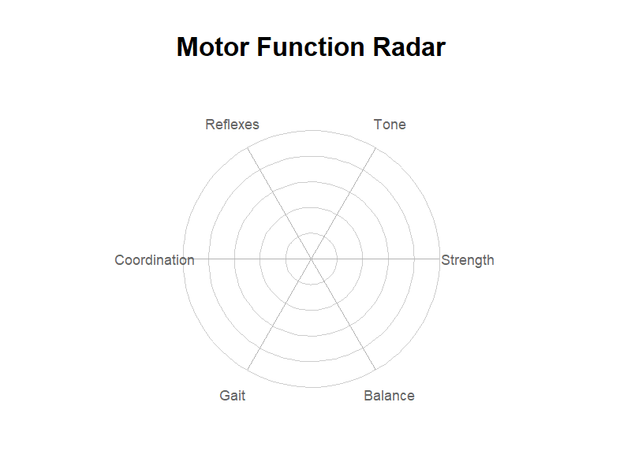
運動機能レーダーチャート（6軸）
6軸の運動機能評価レーダーチャート。神経学的評価に使用。
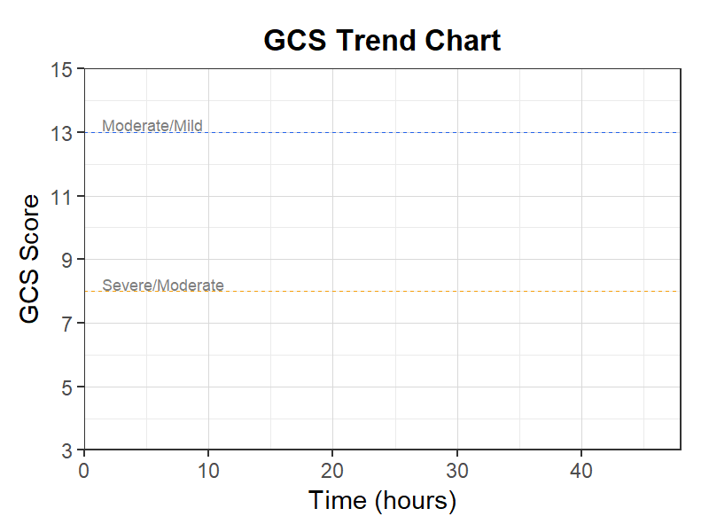
GCS経時変化チャート
GCS経時変化テンプレート。グラスゴー・コーマ・スケールの推移を記録。
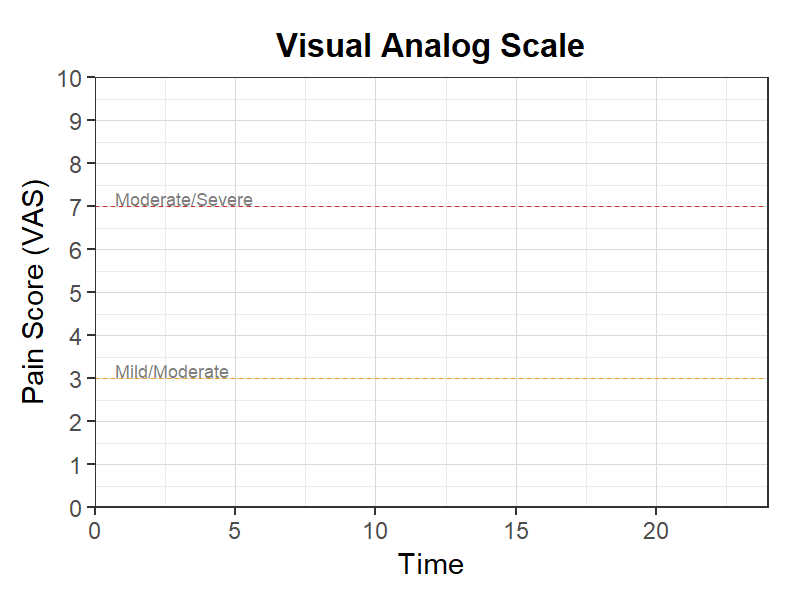
VASペインスケール
VASペインスケール推移テンプレート。疼痛の経時的評価に使用。
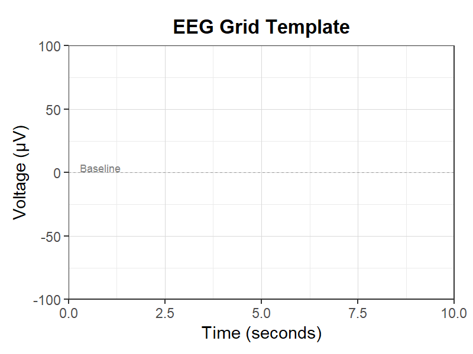
脳波グリッドテンプレート
脳波グリッドテンプレート。脳波検査の記録・解析に使用。
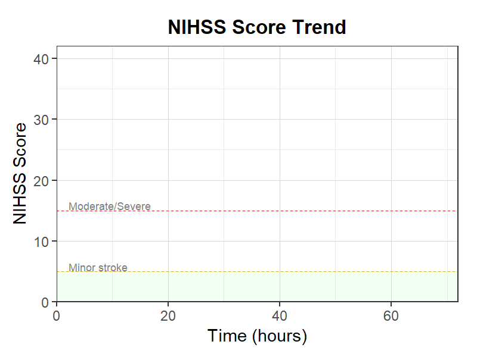
NIHSSスコア推移
NIHSSスコア推移テンプレート。脳卒中重症度の経時的評価に使用。
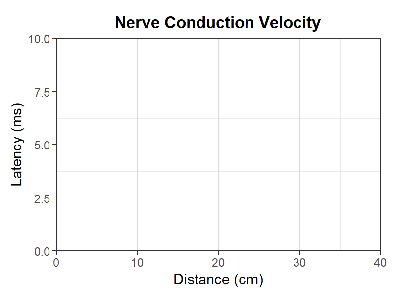
神経伝導速度
神経伝導速度テンプレート。末梢神経障害の電気生理学的評価に使用。
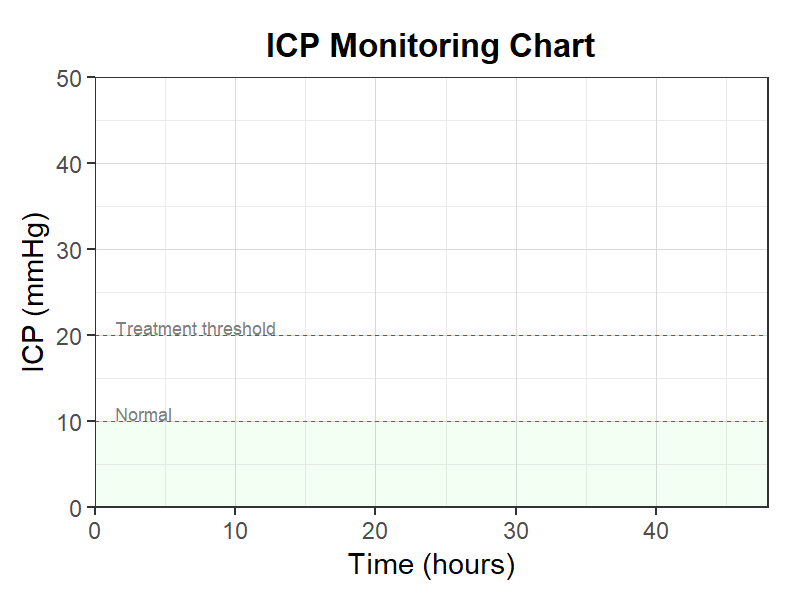
頭蓋内圧モニタリング
頭蓋内圧モニタリングテンプレート。脳浮腫・水頭症の管理に使用。
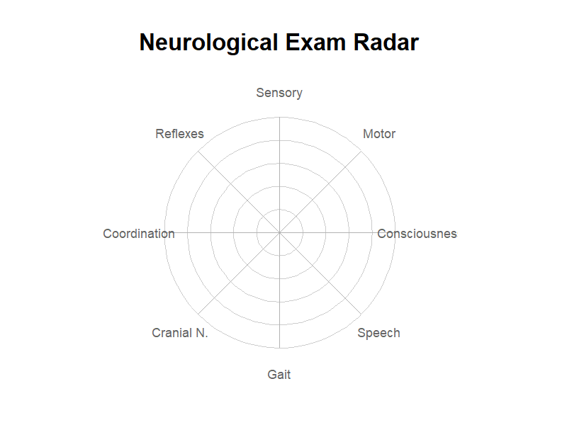
神経学的検査レーダー
神経学的検査レーダーチャートテンプレート。神経学的所見の概要を一覧表示。